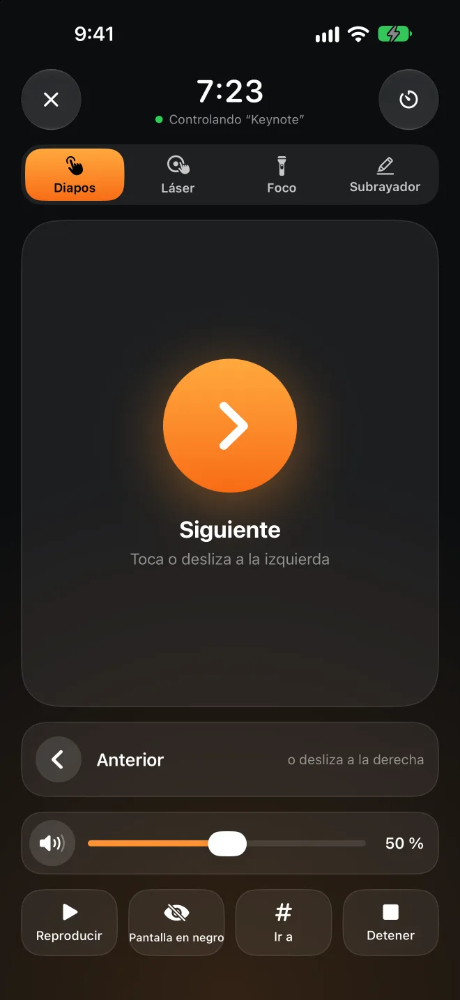

Aléjate y se bloquea.Vuelve y se desbloquea.
Presence vive en la barra de menús del Mac y escucha la señal Bluetooth que tu iPhone o tu Apple Watch ya emiten. Cuando la señal se debilita, la pantalla se bloquea. Cuando vuelves a tu mesa, se desbloquea sola. No hace falta instalar nada en el iPhone ni en el reloj.
La app para Mac es gratuita y de código abierto. Requiere macOS 26 o posterior.
y se desbloquea Aléjate hasta aquí
y se bloquea
Apple Watch cerca−52 dBm
Arrastra Tú hacia la derecha y fíjate en cuándo se bloquea el Mac. Después, vuelve.
Mejor desbloquear un poco tarde que dejarte fuera.
La señal Bluetooth da muchos saltos: basta con darte la vuelta para que cambie bastante. Presence sigue unas cuantas reglas prudentes para no bloquear el Mac mientras sigues delante y para que nadie más pueda entrar en él.
La tendencia de unos segundos, no una sola lectura
Toma la mediana de los últimos 4 segundos, con al menos 3 lecturas. Un pico o una caída repentina no cuentan.
Dos líneas: una para bloquear y otra para desbloquear
El umbral de bloqueo está por debajo del de desbloqueo, así que, si te quedas entre los dos, no va cambiando de un estado a otro. Para calibrar cada dispositivo, quédate 8 segundos donde quieres que se desbloquee y otros 8 donde quieres que se bloquee.
¿Sigues escribiendo? Espera
Si la señal se debilita pero alguien sigue usando el teclado o el ratón, el bloqueo espera.
Pregunta a tu iPhone antes de desbloquear
Con Presence Remote, antes de escribir tu contraseña, el Mac pide al iPhone que responda con la clave que se intercambiaron al enlazarlos. Una señal Bluetooth falsificada no puede desbloquear el Mac.
Primero, el Apple Watch
Antes de desbloquear, espera unos segundos para que macOS pueda desbloquear el Mac con tu Apple Watch. Solo si el Mac sigue bloqueado, Presence escribe tu contraseña, y cada pocos caracteres comprueba que siga en la pantalla de inicio de sesión.
Se bloquea cuando debe. Cuando no, no estorba.
Todo esto viene en la app para Mac, gratis.
Sin bloqueos en plena presentación
Mientras Keynote o PowerPoint reproducen una presentación, el bloqueo automático se pausa. Sal al frente de la sala y el proyector no mostrará de golpe una pantalla de inicio de sesión.
Más relajado en casa
Puedes desactivar el bloqueo automático en una red de confianza, con el cargador conectado o fuera del horario que elijas. Las redes se reconocen por el router, así que no hace falta dar permiso de ubicación.
Pausa durante un rato
¿Vas a prestar el Mac o entras en una reunión? Pausa Presence entre 15 minutos y 4 horas. Si no estás cerca cuando termina la pausa, se bloquea al instante.
Entérate si alguien lo desbloquea mientras no estás
Si alguien desbloquea el Mac a mano mientras no estás cerca, queda registrado en el historial. Presence también puede tomar una foto y avisar a tu iPhone.
Cuánto tiempo llevas hoy en tu puesto
“Tiempo en tu puesto” lleva la cuenta de hoy y de los últimos 7 días, y te avisa para que te levantes cuando llevas demasiado rato sin moverte.
Si vienes de BLEUnlock
Presence parte de la idea de BLEUnlock y se ha reescrito para el macOS actual. Importa tus dispositivos y umbrales con un clic.



En el escenario, el iPhone es tu pasador.
Sin mandos que comprar ni receptores que conectar. Mueve el dedo por el iPhone y aparece un punto rojo, un foco o una línea de subrayador en el mismo sitio de la pantalla grande. Pruébalo en el iPhone de abajo.
Elige Láser, Foco o Subrayador y arrastra el dedo por el panel del iPhone. Las líneas del subrayador desaparecen a los pocos segundos y se borran al cambiar de diapositiva.
Toca o desliza para pasar diapositivas
Ve a una diapositiva concreta, pon la pantalla en negro, inicia y termina la presentación.
Funciona en la pantalla bloqueada
Botones para pasar diapositivas en la pantalla bloqueada y en la Dynamic Island, sin desbloquear el iPhone.
El Apple Watch también es un pasador
Toca, gira la Digital Crown o usa el doble toque. Desliza a la izquierda para el volumen del Mac.
Temporizador de charla
Indica cuánto va a durar tu charla y notarás un toque en la muñeca cuando queden 5 minutos y al acabar el tiempo.
El volumen del Mac
¿El vídeo de la presentación suena demasiado alto o bajo? Ajústalo sin tener que volver al Mac. En la pantalla grande no aparece ningún indicador de volumen.
Cualquier app de presentaciones
Keynote, PowerPoint, Presentaciones de Google, PDF. El punto y el foco se dibujan por encima y nunca hacen clic en nada.
Bloquear es gratis. El pasador es Pro.
La app para Mac y Presence Remote para iPhone y Apple Watch son gratuitas. Solo el mando de presentaciones forma parte de Presence Pro.
App para Mac
De código abierto, notarizada por Apple y se actualiza sola.
- Se bloquea cuando te vas y se desbloquea cuando vuelves
- Sigue desbloqueado mientras presentas o estás en casa
- Historial y tiempo en tu puesto
Presence Remote
La app complementaria para iPhone y Apple Watch.
- Bloquea el Mac desde el iPhone, el reloj o el centro de control
- Pausa y reanuda el bloqueo automático
- Avisos cuando el Mac se bloquea o alguien lo desbloquea
- Confirmación cifrada antes de desbloquear
Presence Pro
Mando de presentaciones: diapositivas, láser, foco, subrayador, volumen y temporizador de charla, en el iPhone y el Apple Watch.
Las dos suscripciones empiezan con 7 días de prueba gratis. Las tres opciones se pueden compartir con En familia.
Pásate a Pro en la appTu Mac solo escucha a tu iPhone.
Sin cuenta ni servidor
El Mac y el iPhone se comunican directamente por Bluetooth, nunca por internet. El desarrollador no recibe nada tuyo.
Todos los comandos van cifrados
Al enlazarlos se crea una clave que solo comparten tus dispositivos. Todos los comandos y estados se cifran y se verifican con ella, así que el móvil de otra persona no puede enviar comandos.
Tu contraseña se queda en el llavero
La contraseña de inicio de sesión que se usa para desbloquear se guarda en el llavero del Mac, y solo después de que Presence compruebe que es correcta.
Código abierto
La app para Mac es totalmente de código abierto. Puedes leer exactamente cómo decide y cómo desbloquea.
Preguntas frecuentes
¿Tengo que instalar una app en el iPhone?
No. Presence escucha la señal Bluetooth que el iPhone y el Apple Watch ya emiten, así que la app para Mac basta para bloquear y desbloquear. Con Presence Remote también puedes bloquear a distancia, recibir avisos y añadir una confirmación cifrada antes de desbloquear; Presence Pro añade el mando de presentaciones.
¿Qué necesito?
Un Mac con Bluetooth LE y macOS 26 o posterior. Presence Remote necesita iOS 26 o watchOS 26 o posterior. También puedes usar solo un Apple Watch, u otro dispositivo Bluetooth que emita con regularidad con una dirección fija.
¿En qué se diferencia de desbloquear el Mac con el Apple Watch?
La función integrada solo desbloquea; no bloquea cuando te alejas. Presence hace las dos cosas, y al desbloquear espera primero unos segundos para que el reloj desbloquee el Mac; solo escribe tu contraseña si el reloj no lo ha hecho. Las dos funcionan juntas.
¿Se bloqueará aunque no me mueva de la silla?
La señal tiene que mantenerse débil durante varios segundos, y el umbral de bloqueo está por debajo del de desbloqueo. Si sigues escribiendo o usando el ratón, el bloqueo espera. Si aun así es demasiado sensible, vuelve a calibrar en Dispositivos.
¿Por qué la app para Mac no está en el Mac App Store?
Desbloquear automáticamente implica escribir tu contraseña de inicio de sesión, y las apps del Mac App Store no pueden hacerlo. Por eso la app para Mac está notarizada por Apple, se descarga desde GitHub y se actualiza sola.
¿Con qué apps de presentaciones funciona?
Para pasar diapositivas se envían las teclas de flecha, que entienden Keynote, PowerPoint, Presentaciones de Google y los visores de PDF. El láser, el foco y el subrayador los dibuja Presence por encima de todo, así que funcionan con cualquier cosa que haya en pantalla. Antes, activa “iPhone y Watch › Permitir mando de presentaciones” en Presence en el Mac.
¿Gasta mucha batería?
El iPhone y el Apple Watch emiten estas señales de todos modos; Presence solo escucha desde el Mac, donde normalmente usa menos del 1 % de la CPU.